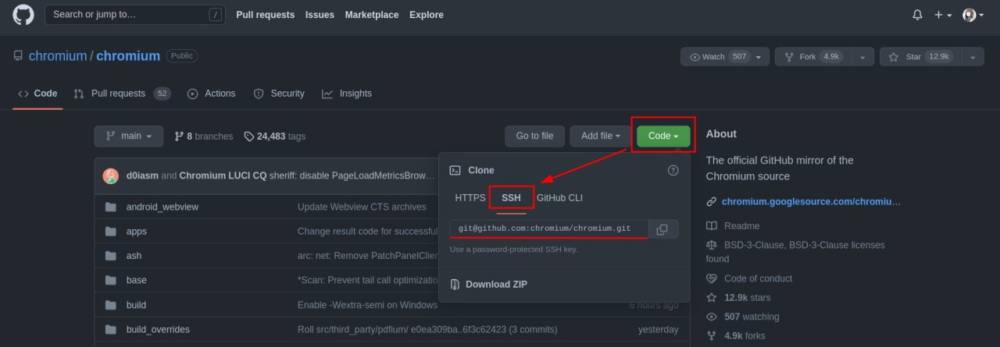
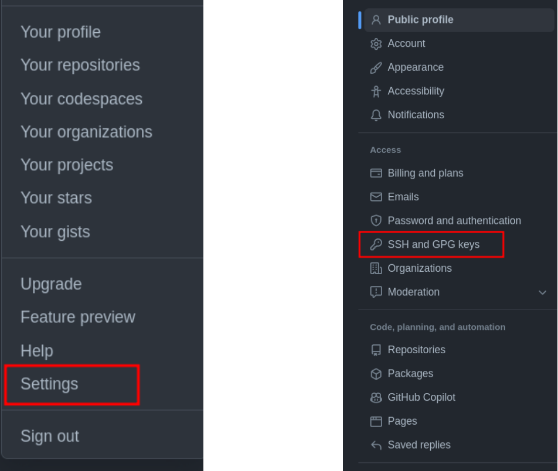
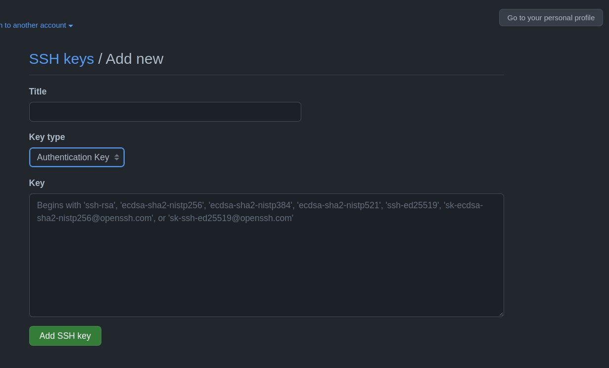

Github 简介
git
本节可以与 https://www.atlassian.com/git/tutorials/what-is-version-control 一起食用
git 和 github 是完全不同的两个东西，但二者之间有所关联。
git 是一个开源的版本控制工具。
github 是一个远程代码托管平台。
本地仓库
git 以“仓库”为基本管理单元，仓库可以认为就是一个文件夹。
git init 命令能将当前目录变成一个 git 仓库，生成仓库的描述信息，
这些信息以特定格式储存在 .git 文件夹中。
对于文件夹内文件也就是仓库内文件的状态，可以用 git 相关命令得知。
修改文件后，可以使用 git add <filename/directory> 来对文件进行跟踪，
使用 git commit 来将所有跟踪的修改进行提交。
Note
命令行下的格式描述:
一般来说，不带括号的即为命令本身，也是固定部分，例如 git add。
而带有括号的内容则是可变部分，其中 <> 的内容为不可缺省，[] 包含的内容为可缺省。
上文中 git add 不能变化，而 <filename/directory> 则是用你想要 add 的文件的文件名或者目录名称来进行替换，例如 git add testfile，但是不能留空。
每一次提交的内容都会记录在 log 中，可以使用 git log 来进行查看。
每一个 commit 都是一个版本，git 知道所有的版本信息，因此可gen b以使用 git 轻易回退到以前的版本，也可以恢复到最新的版本。
想了解更多命令，可以借助搜索引擎，或参考官方网站。
个人信息
对于每个 commit，git 会记录提交者的用户名、邮箱，以及提交消息等信息
（提交消息在每次提交时均要填写，用来描述本次提交你做了哪些修改。提交必须包含该字段，可以通过 -m <message> 参数直接在命令行添加，也可以等待 git 为你打开编辑器）。
在此前，你必须设置这些信息。
可以通过 git config user.name MyUsername 进行用户名的设置，
也可以加上 --global 参数来进行全局的设置，git config --global user.email "test@mail.com"。
Note
注意，这里的用户名和邮箱并不等同于你在 github 上注册的帐号的用户名和邮箱，此处是为了在 commit 记录中说明是谁进行了提交，而后者则是为了在 github 验证身份，确定你的确有权利往 github 的那个指定仓库提交代码。
你也可以通过设置 user.signingkey 来设置你想要使用的签名密钥，通过设置 git config gpg.program 来设置 gpg 工具。
提交时可以加上 -S 参数来对本次提交进行签名。
github
远程仓库
顾名思义，远程仓库即“非本地的仓库”。
一般来说，远程仓库托管在远程代码托管平台（或者叫 git 服务器也行），例如 github 等。
git 能够与 git 服务器进行交互，例如将本地仓库上传（push）到远程仓库，
或者将远程仓库的内容取回（fetch）本地（来更新本地的代码），
或者将远程仓库“克隆”（clone）到本地（一开始本地根本就没有这个仓库）。
本地将代码上传到远程仓库的时候，需要指定地址。
但是实际上，很多时候我们仅仅敲了 git push，并没有指定仓库地址，
其原因在于，从 github 上直接 clone 下来的仓库，.git 中已经将其设为默认远程仓库，别名为 origin，
因此 git push origin 在这里跟上面是完全等效的。
push 命令格式为 git push [remote] [branch]，可以额外添加参数，具体见官网文档。
远程仓库的认证
用 git 也能进行远程仓库的管理，这的确很方便。但是无论是下载私有仓库的代码，或是上传代码，都需要输入一次 github 的用户名和密码，这太烦了。
那么除了用户名和密码以外，有没有更简单的办法来验证身份呢？ 当然是有的，那就是使用 ssh 密钥。
其原理与 GPG 一致，属于非对称加密。
使用 ssh-keygen 即可生成**代表电脑身份**的密钥对，将公钥上传到 github 中你的帐号下，即可验证你的电脑的身份。
当远程仓库的地址设置为类似 git@github.com:testuser/testrepo 的格式时，无需验证帐号密码。
在如图所示的地方可以获得该模式的仓库地址

设置过程的图文描述
进入 github 主页，点击右上角的头像，会出现菜单栏，点击其中的 settings 进入设置；
在设置页面中，最左侧有一个菜单栏，点击 SSH and GPG keys，进入密钥设置。

点击 New SSH key，SSH 密钥在此处即可添加，一般用于登录验证，故选择类型为 authentication key。

为 commit 签名
GPG那一章提到，GPG 密钥具有签名功能，我们当然可以使用 GPG 密钥来对 commit 进行签名，来证明“确实是我自己”进行了这个提交。
将你的 GPG 公钥 上传到 github 中你的帐号下（方法跟上文 SSH key 完全相同）之后，你的私钥签名后的 commit，将在 github 上显示一个 "Verified" 标签。
如果手上没有你的私钥，那显然是不能签名的（可以用其他私钥签名，但是由于其公钥没有上传到你的 github 帐号下，所以不被认为是你签的名）。